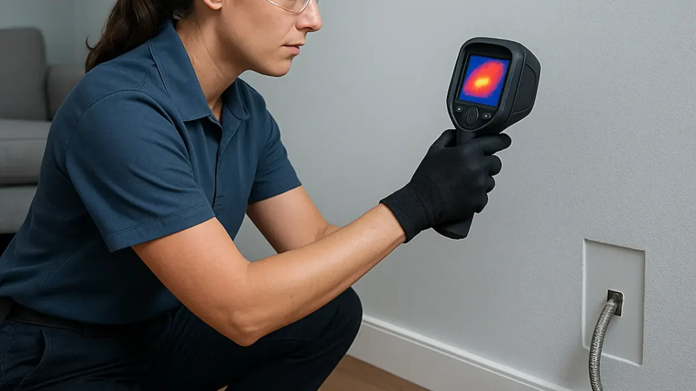

We provide a detailed report outlining the issues and recommend the best solutions for repair. Our technicians then carry out the repairs using high-quality materials, and after the work we do a final assessment to confirm all leaks are resolved. You are not left guessing whether the leak is actually gone.
Hidden leaks, found and fixed
Find the leak, fix the leak, check it is gone
The worst leaks are the ones you cannot see: water behind a wall, under a floor, or in a pipe that only shows itself as a rising water bill or a damp patch. Our leak detection and repair services in California use advanced technology to find those hidden leaks, then fix them and check afterwards that they are actually gone.
What this service is: Leak detection and repair means finding and fixing leaks in a plumbing system, including hidden leaks, using advanced technology to detect them before they cause serious damage. It is a two-part job: detection first, with tools like water pressure gauges and infrared cameras, and repair second, using high-quality materials and a final assessment to confirm the leak is resolved.

Careful work. Honest options.
About this service
Understanding leak detection and repair services in California
A leak is found before it is fixed, and that order matters. Hidden leaks, behind a wall, under a floor, or in a pipe under a slab, are found with tools, not by opening up a room and looking: the water meter, a pressure test, and an infrared camera that detects temperature changes in walls. Only when the leak is located is the repair quoted, because the cost depends entirely on where the leak is and how it has to be reached.
Older pipes develop small cracks, joints loosen over time, and a leak that goes unnoticed can cause water damage and costly repairs, especially during the rainy season. The longer a hidden leak runs, the more it costs: a damp patch today can be a collapsed ceiling later, which is why finding it early is worth more than fixing it fast.
- ✓ Prevent costly damage from hidden leaks
- ✓ Reduce water bills by stopping the waste
- ✓ Increase property value with a sound system
- ✓ Health and safety by removing damp and mould
California homes add their own difficulties to leak work. Many homes are built on concrete slabs, so a leak under the floor cannot be seen at all, and the only signs are a rising bill, a warm patch on the floor, or damp at the edges of a room. Older homes add ageing pipework that can leak at joints that have been under pressure for decades. That is why leak detection is a two-part job, detection first with proper tools, and repair second, and why the repair is never quoted before the inspection: the cost depends entirely on where the leak is and how it has to be reached.
What's included
What our leak detection and repair services include
A leak job is not finished when the water stops. It is finished when the cause is found, the repair is made properly, and a final check confirms the system is leak-free.
✓
Comprehensive leak inspection
We provide thorough inspections using advanced technology to identify leaks in your plumbing system, including leaks hidden in walls and floors that a visual check would miss.
✓
Expert repairs
Our technicians perform high-quality repairs using industry-standard materials, ensuring long-lasting results and compliance with California plumbing codes, so the same joint does not leak again.
✓
Detailed reporting
After inspection, we provide a detailed report outlining our findings and recommended actions for repairs, so you know exactly what was found, where it was, and what the repair involves.
✓
Follow-up services
We offer follow-up services to ensure your plumbing system remains leak-free and functioning well, because a leak that returns is a leak that was never properly finished.
✓
Water meter and pressure testing
We check the water meter with everything off, and test the pressure at different points in the system. Together these two tests confirm whether water is escaping, and narrow down where, before any wall is opened.
✓
Slab leak detection
We detect leaks under concrete slabs, where the only signs are usually a rising bill, a warm patch on the floor, or damp at the edges of a room. The meter and pressure tests confirm the leak, and the infrared camera shows where heat or damp is collecting on the floor.
How it works
Our leak detection and repair process
01
Initial consultation
The process begins with a consultation to discuss your concerns. Our experts assess your plumbing system and schedule a time for inspection, so the visit is planned around the signs you have noticed, such as a higher bill or a damp wall.
02
Thorough inspection
Our team conducts a detailed inspection using advanced tools like water pressure gauges and plumbing snakes to locate any hidden leaks, including an infrared camera that detects temperature changes in walls.
03
Leak identification
Once leaks are detected, we provide a detailed report outlining the issues and recommend the best solutions for repair, so you can approve the work knowing exactly what is wrong and what it will take to fix.
04
Repair services
Our skilled technicians perform necessary repairs using high-quality materials, ensuring long-lasting results and compliance with California plumbing codes.
05
Final assessment
After repairs, we conduct a final assessment to ensure all leaks are resolved and your plumbing system is functioning optimally, rather than assuming the job is done.
During your visit
What happens during your visit
Here is what happens when our technician visits, in order:
- Initial consultation: the process begins with a consultation to discuss your concerns. The technician asks what you have noticed: a rising water bill, a damp patch, a smell of mould, or the sound of running water when everything is off. The symptoms point to where the leak is likely to be, and the consultation decides where the inspection starts.
- Water meter check: the technician starts with the water meter. With all taps and appliances off, the meter should not be moving. If it is, water is escaping somewhere in the system. This is the simplest and most reliable first test, and it also tells the technician whether the leak is inside the home or in the supply line.
- Pressure testing: the technician tests the water pressure in the system. A pressure drop can point to water escaping somewhere it should not, and a pressure spike can point to a problem that is straining pipes and joints. The water pressure gauge is used to compare the pressure at different points, which narrows down where the leak is.
- Infrared camera scan: the technician scans the walls and floors with an infrared camera, which detects temperature changes caused by water behind a surface. A cold patch on a wall, or a warm patch where a hot water pipe runs, shows where water is collecting without the wall being opened first. This is what makes it possible to find a hidden leak without tearing a room apart.
- Pinpointing the leak: the meter, the pressure test and the camera together narrow the leak down to a specific area, and often to a specific joint or section of pipe. The technician will show you what was found and explain it before any repair is discussed, so you know exactly where the leak is and why it happened.
- Detailed report and repair options: once the leak is found, you receive a detailed report outlining the findings and the recommended actions for repair. The repair is then quoted on what was actually found, not on a guess. That matters for leak work more than for any other job, because the cost depends on where the leak is and how much has to be opened up to reach it.
- Repair services: the technicians perform the necessary repairs using high-quality materials, ensuring long-lasting results and compliance with California plumbing codes. A leaking joint is fixed or replaced; a damaged section of pipe is replaced. The repair is done so the same joint does not leak again.
- Final assessment and re-test: after repairs, a final assessment ensures all leaks are resolved. The water meter is checked again with everything off, the pressure is tested again, and the repaired area is checked for damp. The job is only finished when the meter stays still and the pressure holds, because that is the proof the leak is actually gone.
Questions about the visit and the repair
Yes. After repairs, we conduct a final assessment to ensure all leaks are resolved and your plumbing system is functioning optimally. We also offer follow-up services to keep your plumbing system leak-free, so a leak that returns is caught early rather than left to cause damage again.
Typical scenarios
Typical leak problems we are called for
The worst leaks are the ones you cannot see. These are the patterns that bring us out, and the signs that tell you a leak is there before the damage shows.
A water bill that rises with no change in use
This is the most common first sign of a hidden leak. The household is using water the same way it always has, but the bill keeps rising. The visit starts with the water meter: with everything off, the meter should not move. If it does, water is escaping somewhere. The pressure test and the infrared camera then narrow down where, and the repair is quoted on what is actually found. Finding a leak this way, from the bill, is far cheaper than finding it from a collapsed ceiling.
A damp patch on a wall or ceiling
A damp patch, a water stain, or paint and plaster that is bubbling usually means a leak behind the surface. The infrared camera can show how far the damp has spread without the wall being opened, and the pressure test confirms whether the leak is still active. The repair is then planned for the smallest opening that reaches the leak, and the final assessment re-tests the area to make sure the leak is gone before the wall is closed up.
Mould and a musty smell in a bathroom
Mould growing in a bathroom, or a musty smell that does not go away, is often a leak rather than a ventilation problem. Damp from a leak is what mould needs to grow, and a bathroom or a wall that stays damp will keep growing it no matter how often it is cleaned. The inspection finds whether water is escaping behind the wall or under the floor, the leak is repaired, and the final assessment checks the area is dry. Fixing the leak is what stops the mould coming back.
Questions about spotting a leak
You can detect leaks by checking your water meter, inspecting for damp spots, or using leak detection services. Professional services can accurately identify hidden leaks. A simple check is to look at the water meter when no water is running: if it is still moving, water is going somewhere. Damp walls, water stains and mould are other signs worth acting on.
Signs of a leak include unexplained increases in water bills, damp walls, mould growth, and water stains. If you notice these signs, contact us for leak detection. A bill that rises without a change in use is often the first sign, because a hidden leak wastes water every day.
Tools & methods
Tools and methods we use for leak detection
Purpose-built equipment, used by trained technicians — so the job is done accurately the first time.
Plumbing snake
Used to clear clogs that may cause leaks in your plumbing system, since a blocked pipe can put pressure on joints until they leak.
Water pressure gauge
Helps determine if there are abnormal pressure levels indicating potential leaks, because a pressure drop or a pressure spike can point to water escaping somewhere it should not.
Infrared camera
Allows us to detect temperature changes in walls, identifying hidden leaks without opening the wall first.
Pipe wrench
Essential for tightening and loosening pipe fittings during repairs, so a leaking joint can be fixed or replaced securely.
Acoustic listening equipment
Used to listen for the sound of water escaping from a pipe, which helps pinpoint a hidden leak to a specific joint or section before any wall or floor is opened.
Questions about how leaks are found
Yes. Leak detection and repair in California is done to local codes and regulations, using proper detection tools, industry-standard materials, and a final assessment that confirms the finished work meets California plumbing codes.
We use advanced tools including water pressure gauges and plumbing snakes, and infrared cameras, which detect temperature changes in walls to identify hidden leaks. The gauge tells us whether pressure is behaving abnormally; the infrared camera shows temperature changes that point to water where it should not be.
Real results
Before and after: leaks we have found and fixed
Kitchen leak repair
Before
A homeowner noticed water pooling under the kitchen sink, indicating a possible leak.
After
After our inspection, we found and repaired a damaged pipe, eliminating the leak and restoring the area to its original condition.
Basement flood prevention
Before
A basement was prone to flooding due to a hidden leak in the plumbing system.
After
We detected the leak and repaired it, preventing further flooding and water damage.
Bathroom mould removal
Before
Mould was growing in a bathroom due to a leak behind the wall.
After
After repairing the leak, the bathroom could dry out properly, so the mould stopped coming back.
Problems we solve
Common problems solved by our services
Leaks announce themselves in indirect ways: a bill, a smell, a stain. These are the three problems that most often turn out to be a hidden leak.
Ask a pro →Hidden leaks causing water damage
A leak behind a wall or under a floor can do serious damage before anyone sees water. The infrared camera shows how far the damp has spread without the wall being opened, and the pressure test confirms whether the leak is still active, so the repair is planned for the smallest opening that reaches it.
Increased water bills
A water bill that rises without any change in use usually means water is going somewhere it should not. The visit starts with the water meter: with everything off, the meter should not move. If it does, the pressure test and the infrared camera narrow down where the water is escaping.
Mould growth from leaks
Damp from a leak is what mould needs to grow, and a bathroom or a wall that stays damp will keep growing it. Damp from a leak is what mould needs to grow, and cleaning the mould without fixing the leak only buys time. We find the leak, repair it, and re-test the area to make sure it is dry.
Damp patches on walls or ceilings
A damp patch or a water stain usually means a leak behind the surface. Our infrared camera shows how far the damp has spread without opening the wall first, and our repair fixes the leak at its source, so the wall can dry out properly.
Sound of running water when everything is off
If you can hear water running when every tap and appliance is off, water is escaping somewhere. We check the meter and the pressure first, then use the camera to find the leak, so it is located before any wall or floor is opened.
Questions about hidden and slab leaks
In most cases, yes. The infrared camera detects temperature changes in walls caused by water behind the surface, and the water meter and pressure tests confirm whether water is escaping and narrow down where. Together, these tools usually locate a leak to a specific area without any wall being opened. Reaching the leak to repair it may still need a small opening, but the opening is planned from the findings, so it is as small as the leak allows, and it is made in the right place rather than in several places while the leak is searched for.
Leak detection is accurate when it uses more than one test. The water meter confirms that water is escaping; the pressure test narrows down which part of the system it is in; the infrared camera shows where the damp is collecting behind a surface; and acoustic listening can pinpoint the sound of water escaping from a specific joint or section. No single test is proof on its own, which is why the inspection uses them together, and why the final assessment re-tests the meter and the pressure after the repair. The job is only finished when the meter stays still and the pressure holds, because that is the proof the leak is actually gone.
Many California homes are built on concrete slabs, and a leak under the slab cannot be seen at all. The signs are usually a rising water bill, a warm patch on the floor where a hot water pipe runs, or damp at the edges of a room. The inspection starts with the meter and the pressure test, which confirm the leak and narrow down whether it is in the hot or cold supply, and the infrared camera can show where heat or damp is collecting on the floor. The repair is then quoted on what was found, and the options are discussed with you before anything is opened up, because a slab leak is the kind of job where the repair plan has to be agreed on the evidence, not guessed at.
Transparent pricing
Leak detection and repair pricing
$150 - $500 depending on scope
The cost for leak detection and repair services in California typically ranges from $150 to $500, depending on the complexity of the job and the location of the leak. Factors such as accessibility, the severity of the leak, and the materials needed for repairs can influence pricing. A leak that is easy to reach and quick to fix sits at the lower end; a hidden leak behind a wall, or one that needs extensive repair, sits at the higher end. Our services provide value by preventing costly damage and reducing water waste.
Finding and fixing a leak early is almost always cheaper than repairing the water damage it causes if it is left alone.
The estimate comes after the inspection and the detailed report, so it is based on what was actually found, not on a guess. Detection and repair are quoted on what the inspection shows, and nothing is opened up or repaired without your approval.
01Accessibility of the leak
Leaks that are difficult to access may require more time and effort, increasing overall costs. A leak behind a wall or under a floor takes longer to reach and to repair than one under a sink.
02Severity of the leak
More severe leaks may require extensive repairs, affecting the total price. A small drip from a joint is a different job from a pipe that has been leaking into a wall for weeks.
03Materials needed
The type of materials used for repairs can also influence the cost, with higher quality materials often costing more. Good materials mean the repair lasts and the leak does not come back.
04Whether walls or floors need opening
The infrared camera finds the leak without opening the wall, but reaching it to repair it may still need a small opening. The estimate covers the repair, and the opening is kept as small as the leak allows.
Compare the cost factors
What affects the cost of leak detection and repair?
Typical costs range from $150 - $500, depending on scope. The table below shows the factors that move the price up or down.
| Cost factor | How it affects the price |
|---|---|
| Accessibility of the leak | Leaks that are difficult to access may require more time and effort, increasing overall costs. A leak behind a wall or under a floor takes longer to reach and to repair than one under a sink. |
| Severity of the leak | More severe leaks may require extensive repairs, affecting the total price. A small drip from a joint is a different job from a pipe that has been leaking into a wall for weeks. |
| Materials needed | The type of materials used for repairs can also influence the cost, with higher quality materials often costing more. Good materials mean the repair lasts and the leak does not come back. |
| How hidden the leak is | A leak under a sink is a short job. A leak behind a wall, under a floor, or in a slab takes detection work first, and the deeper it is hidden, the more time the inspection and the repair take. |
| Whether walls or floors need opening | The infrared camera finds the leak without opening the wall, but reaching it to repair it may still need a small opening. The estimate covers the repair, and the opening is kept as small as the leak allows. |
| Extent of the damage around the leak | A leak that has been running for weeks may have damaged plaster, flooring or the structure around it. The inspection finds the full extent before the repair is priced, so the estimate reflects the whole job, not just the leaking joint. |
Questions about cost
Typical costs for leak detection services in California range from $150 to $500, depending on the complexity of the job and the location of the leak. A leak that is easy to reach sits at the lower end; a hidden leak behind a wall, or one that needs extensive repair, sits at the higher end.
Proof you can check
Trust and proof of our services
Customer reviews
What our customers say about our services
★★★★★
“I had a hidden leak in my kitchen, and the team was quick to respond. They found and fixed it within hours, saving me from potential water damage.”
JD
John D.Homeowner, Long Beach
✓ Verified“
★★★★★
“Their leak detection services are top-notch! They were thorough and professional, helping us maintain our properties without disruption.”
SL
Sara L.Property Manager, San Bernardino
✓ Verified★★★★★
“I was impressed with their rapid response time. They resolved a serious leak in my restaurant, allowing us to reopen quickly. Highly recommend!”
MT
Mike T.Business Owner, Oceanside
✓ Verified Before you book
What to look for before you book
Before you book leak detection and repair in California, compare plumbers on the things that decide whether a hidden-leak job goes well. Here is what to check:
- Licensed and insured. Look for a licensed and insured team. Our team is fully licensed and insured, and our work meets California state plumbing codes. For leak work, ask whether the inspection uses proper detection tools, such as an infrared camera and a water pressure gauge, rather than only a visual look.
- A written estimate before work begins. Every package includes a written estimate before work begins, so you know the cost upfront. For a leak, the estimate should come after the inspection and the detailed report, so it is based on what was actually found, not on a guess.
- Transparent pricing. Typical costs for leak detection and repair in California range from $150 to $500, depending on scope. The cost factors listed on this page show what moves the price up or down, above all how easy the leak is to reach, how severe it is, and what materials the repair needs.
- Fast response, including 24/7 emergency service. Plumbing problems cannot always wait. We are available 24/7, and our emergency plumbing services cover urgent issues whenever they arise. A leak that is actively flooding a room should not wait for a planned visit.
- Good reviews from local customers. Check reviews from local customers before you book, and look for reviews that mention a hidden leak specifically, including whether the leak was found, fixed, and stayed fixed.
- Ask whether the price covers detection only, or detection and repair. Some jobs are priced in two parts: finding the leak, then fixing it. Ask what the estimate covers, and whether the repair is quoted after the detailed report, so the price is based on what was actually found.
- Ask for the written report before approving the repair. The detailed report should say where the leak is, what caused it, and what the repair involves. If a plumber wants to open up a wall without a report showing why, ask for the findings first.
Where we deliver this service
Cities we serve for leak detection and repair
Our leak detection and repair services extend across California, so homeowners in the cities below can get a hidden leak found and fixed before it causes serious damage.
Long BeachIn Long Beach, we provide prompt leak detection services, ensuring homeowners can quickly address plumbing issues.View area →San BernardinoSan Bernardino residents benefit from our thorough leak detection, helping to prevent costly water damage.View area →OceansideOceanside's coastal homes often face unique plumbing challenges, and our services are designed to tackle these effectively.View area →HaywardIn Hayward, we specialize in detecting leaks in older plumbing systems, ensuring homes remain safe and dry.View area →Santa ClaraSanta Clara homeowners can rely on our expertise for comprehensive leak detection and repair solutions.View area →CarlsbadCarlsbad's diverse climate requires specialized leak detection services to prevent water damage.View area →Redwood CityIn Redwood City, our team addresses plumbing issues promptly, ensuring minimal disruption for residents.View area →Walnut CreekWalnut Creek residents trust our leak detection services to maintain their home's plumbing integrity.View area →SparksSparks homeowners benefit from our expert leak detection, ensuring their plumbing systems function properly.View area →BishopIn Bishop, we provide reliable leak detection services tailored to local plumbing conditions.View area →EncinitasEncinitas residents can count on our expertise for quick and effective leak detection solutions.View area →PortervillePorterville homeowners can rely on our comprehensive leak detection services to prevent water waste.View area →LathropIn Lathrop, our team specializes in addressing leaks quickly to minimize disruption.View area →TulareTulare residents benefit from our prompt leak detection and repair services, keeping their homes safe.View area →SeasideSeaside's unique coastal conditions require specialized leak detection services, and we are here to help.View area →
More services
Related Services
 Emergency Plumbing ServicesOur emergency plumbing services are available 24/7 for urgent leak issues, ensuring immediate attention to prevent further damage.Explore →
Emergency Plumbing ServicesOur emergency plumbing services are available 24/7 for urgent leak issues, ensuring immediate attention to prevent further damage.Explore → Residential PlumbingWe offer comprehensive residential plumbing services, including leak detection and repair, to keep your home's plumbing in top condition.Explore →
Residential PlumbingWe offer comprehensive residential plumbing services, including leak detection and repair, to keep your home's plumbing in top condition.Explore → Commercial PlumbingOur commercial plumbing services include leak detection for businesses, ensuring minimal disruption and compliance with local regulations.Explore →
Commercial PlumbingOur commercial plumbing services include leak detection for businesses, ensuring minimal disruption and compliance with local regulations.Explore → Drain CleaningRegular drain cleaning can prevent leaks caused by clogs. We provide thorough cleaning services to maintain your plumbing system.Explore →
Drain CleaningRegular drain cleaning can prevent leaks caused by clogs. We provide thorough cleaning services to maintain your plumbing system.Explore → Sewer Line RepairSewer line repairs can often involve leak detection. We handle all aspects of sewer line issues to keep your plumbing functioning properly.Explore →
Sewer Line RepairSewer line repairs can often involve leak detection. We handle all aspects of sewer line issues to keep your plumbing functioning properly.Explore → Water Heater Repair & InstallationOur water heater services include leak detection and repair, ensuring your system operates efficiently and safely.Explore →
Water Heater Repair & InstallationOur water heater services include leak detection and repair, ensuring your system operates efficiently and safely.Explore → Sump Pump & Pipe Leak RepairWe specialize in sump pump and pipe leak repairs, essential for preventing flooding in your basement or crawl space.Explore →
Sump Pump & Pipe Leak RepairWe specialize in sump pump and pipe leak repairs, essential for preventing flooding in your basement or crawl space.Explore → Toilet Repair & InstallationToilet leaks can waste significant water. Our toilet repair services ensure your fixtures are leak-free and functioning well.Explore →
Toilet Repair & InstallationToilet leaks can waste significant water. Our toilet repair services ensure your fixtures are leak-free and functioning well.Explore → Ready when you are
Get reliable leak detection and repair services in California
Contact us today for expert leak detection and repair services in California. Our certified technicians are ready to help you prevent water damage. Get a free estimate first: a local dispatcher will confirm your visit shortly, and you get an estimate before work begins.
Get a free estimate +1 (619) 612-9370 →
Request an appointment
Contact Our Plumbing Experts
Reach out to us for all your plumbing needs in California. Our team is available to answer your questions and provide quick service. We aim to respond within an hour!
Call anytime+1 (619) 612-9370Email the officeinfo@plumbersincalifornia.com
Office hoursOpen 24 hours · 7 days a week